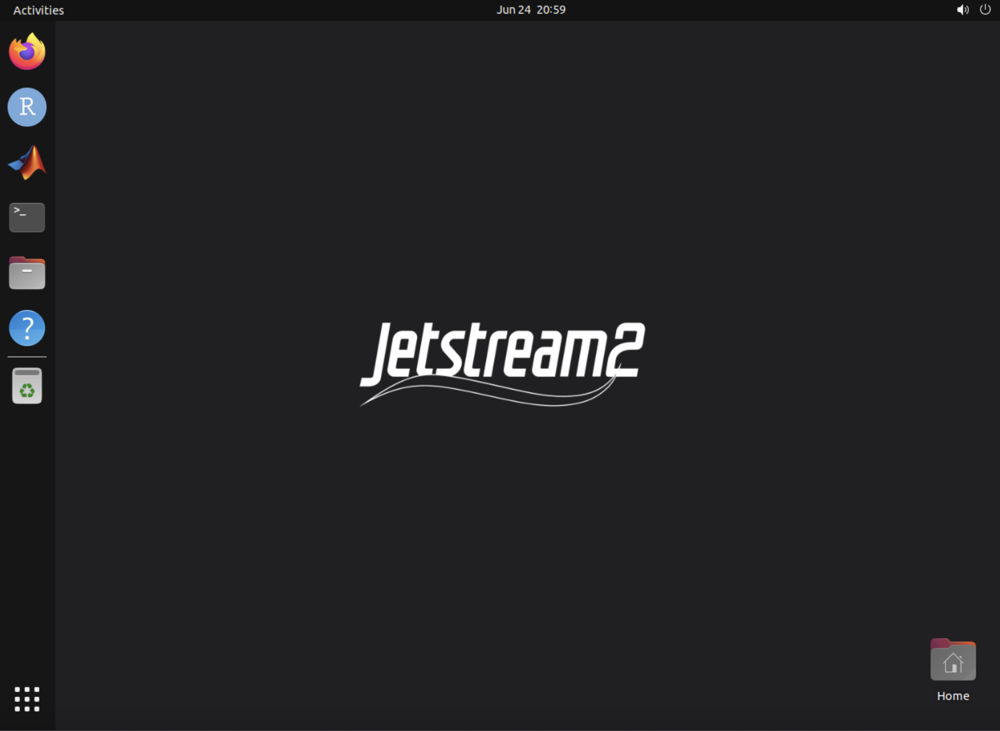

Jetstream VM Instructions
Last updated on 2026-06-24 | Edit this page
Running NGIAB on Jetstream2
For the workshop, an instance may already be created for you. If so, skip ahead to Connecting to your instance and use the SSH credentials emailed to you. The steps below show how to create your own instance if you need to.
Creating a Jetstream2 instance
Go to https://jetstream2.exosphere.app/exosphere/ and log in using your NSF ACCESS credentials.
Click Create → Instance and choose the Ubuntu 24.04 image.
Choose an instance flavor based on your computational needs. For this workshop,
m3.mediumis a good general-purpose starting point.In the instance configuration, set “Enable web desktop?” to Yes. This is what lets you open a web desktop in your browser later. It is required for the recommended workflow below.
Click Create and wait for the instance to finish building. When it is ready, you will be taken to the instance dashboard.
On the dashboard, find the Credentials section. Note the public IP address and the passphrase. You will use these to connect to the VM from your local machine.
Connecting to your instance
You will connect to your instance in two stages:
- Stage 1: SSH Terminal. This is what you use for everything in the Running NextGen in a Box (NGIAB) section: running the ngiab data preprocess, the guide script, etc.
- Stage 2: Web Browser (as needed) You only need this during the visualization step of the tasks, near the end. When you get there, use the Jetstream Web Desktop (recommended) or a VNC client.
Start with Step 1 now. Steps 2’s two options are documented below so they’re ready when you reach the visualization step. You don’t need to set them up yet.
Step 1: Open a terminal over SSH
To run the NGIAB commands, open a terminal on your own computer (Unix terminal or Windows command prompt / PowerShell) and connect to your instance:
Replace [ip.address] with the public IP address from
your dashboard. When prompted, enter the passphrase
shown in the Credentials section.
When logging in for the first time, you may be asked whether you’d
like to trust the host. Type yes to continue. After
verifying your credentials, you will be logged into your instance’s
terminal. You’re now ready to start the Running NextGen in a Box
(NGIAB) section.
Step 2: Viewing the visualizer in a browser
You only need this once you reach the visualization
step in the tasks below (when the console prints a link like
http://127.0.0.1:8080/apps/ngiab). Pick
one of the two options below.
[Recommended] Jetstream Web Desktop
The Web Desktop gives you a full Linux desktop right in your web browser. This is the easiest way to view the NGIAB visualizer.
On your Jetstream2 instance dashboard, find the Interactions section and click Web Desktop.
-
A graphical desktop opens in a new browser tab.

Figure 5: The Jetstream Web Desktop running inside your browser. -
Open Firefox inside the Web Desktop and go to the link printed by the console, for example:
http://127.0.0.1:8080/apps/ngiab
Alternative: connecting with a VNC client
If you prefer a dedicated VNC client instead of the Web Desktop, you can connect over an SSH tunnel. This requires a VNC client installed on your computer. RealVNC and TigerVNC are common choices.
-
Open a second SSH session, separate from the one running your commands. This time with tunneling by adding the
-Lflag, which forwards the VNC port (5906) from the instance to your local machine:The
-Lflag is what makes the remote port reachable locally. Keep this terminal open for as long as you want the VNC connection to stay alive. -
Open your VNC client (RealVNC or TigerVNC) and connect to:
localhost:5906Enter the passphrase emailed to you / shown on the dashboard when prompted.
A remote desktop opens. Open the web browser inside it and enter the visualizer link printed by the console (e.g.
http://127.0.0.1:8080/apps/ngiab).
You can also forward a plain web port (such as 80 or
8080) instead of the VNC port to view the visualizer
directly in your local browser,
e.g. ssh -L 8080:localhost:8080 exouser@[ip.address]. If
you see a message like “Could not request local forwarding”, that port
is already in use, pick a different one.
Running NextGen in a Box (NGIAB)
Before starting this section, make sure you have uv
installed, and make sure you have cloned the NGIAB-CloudInfra and
DataStreamCLI repositories.
-
Verify you have Docker, and that it works as expected:
This should generate a message like this:
Hello from Docker! This message shows that your installation appears to be working correctly. -
Clone the NGIAB source code in your desired directory:
-
Install
uv:
In this section, we will be running NOM+CFE+t-route for the area upstream of USGS gage 02342500 (Uchee Creek Near Fort Mitchell, Al.) over the time period 2020-01-01 to 2020-01-07.
Data Preprocess
The NGIAB Data Preprocess has a built-in function to run NGIAB. This is convenient, but does not allow you to modify any of the preprocessed data files before the run starts.
BASH
uvx -p 3.10 --from ngiab-prep cli -i gage-02342500 -sfr --start 2020-01-01 --end 2020-01-07 --source aorc --run
--run flag to preprocess data and automatically launch a
NextGen run.In this command, uvx allows for you to run the data
preprocessor without installing it as a package.
-i gage-02342500 selects USGS gage 02342500 as the location
to be modeled. -s subsets the NextGen hydrofabric
geopackage, -f generates forcings, -r
generates realization and BMI configuration files, --start
and --end specify the start and end dates of the
simulation, --source specifies the source of raw forcing
data, and --run indicates that a Docker image containing
NGIAB should be spun up after the data has been preprocessed, and a
NextGen simulation should be automatically run with the data.
For more information on the data preprocessor and its functionalities, see the documentation.
Data Preprocess + Guide Script
This method allows you to preprocess data and run NGIAB as separate steps. The guide script in the NGIAB-CloudInfra repository walks you through the NGIAB run and gives you the option to evaluate your results using TEEHR and visualize the results using the Tethys visualizer.
BASH
cd /path/to/NGIAB-CloudInfra
uvx --from ngiab-prep cli -i gage-02342500 -sfr --start 2020-01-01 --end 2020-01-07 --source aorc
chmod +x guide.sh
./guide.sh
When the guide script finishes the visualization step, view the
results in the Web Desktop (recommended) by opening
Firefox and going to the link printed by the console output
(e.g. http://127.0.0.1:8080/apps/ngiab). If you are using a
VNC client instead, first connect to localhost:5906, then
open the link in the remote desktop’s web browser.